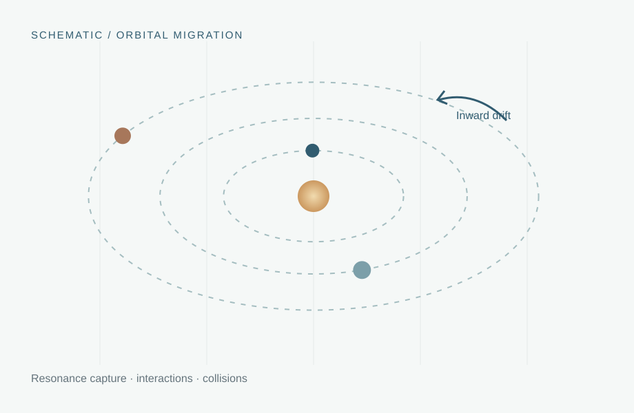

TOI-1130
An inner Neptune-size planet and an outer hot Jupiter with periods near 4.1 and 8.4 days. Photodynamical analysis reported libration of one resonant argument (Korth et al. (2023)).
01 / Planetary astrophysics
How can hot Jupiters acquire short-period orbits while retaining nearby low-mass planetary companions?

01 / Overview
I investigate how disk-driven migration and dynamical interactions can produce hot Jupiters with surviving inner low-mass companions. Using N-body simulations, I study resonant capture, overstable escape, resonance crossing, and collisions among migrating planetary embryos.
Observed systems with companions close to the 2:1 commensurability provide motivation to investigate how resonances influence the assembly and survival of compact planetary systems.
02 / Background
Hot Jupiters are gas giants on short-period orbits, usually only a few days long. Their presence close to their host stars raises a fundamental question: how can massive giant planets form or reach these extreme orbital separations? The main proposed pathways are in situ formation, disk-driven migration, and high-eccentricity tidal migration (see Dawson & Johnson (2018) and Fortney et al. (2021)).
A sufficiently massive core accumulates material near its present close-in orbit and accretes gas before the disk disperses. The key difficulty is assembling or delivering enough solids and gas close to the star.
A planet forms farther out and exchanges angular momentum with the gaseous protoplanetary disk. Lower-mass embryos experience Type-I-like torques; massive, gap-opening giants may migrate in a Type-II-like regime. This pathway can bring planets together and facilitate resonant capture.
Planet–planet scattering or secular perturbations drive the giant onto a highly eccentric orbit. Tidal dissipation near the host star shrinks and circularizes its orbit. Such disruptive evolution tends to make close-in low-mass companions harder to preserve.
These mechanisms are not necessarily mutually exclusive. The survival and orbital arrangement of small companions can help distinguish between evolutionary pathways.
03 / Observations
Several systems contain a Jupiter-mass planet and a smaller interior companion near a 2:1 period ratio. They are particularly valuable because a period ratio close to a commensurability is not by itself proof of sustained resonant libration; the classification depends on dynamical diagnostics and the adopted resonance criterion.
An inner Neptune-size planet and an outer hot Jupiter with periods near 4.1 and 8.4 days. Photodynamical analysis reported libration of one resonant argument (Korth et al. (2023)).
A small inner planet on a 2.2-day orbit and a hot Jupiter on a 4.42-day orbit, close to 2:1, with large transit-timing variations (Korth et al. (2024)).
A 2026 preprint reports a sub-Neptune and hot Jupiter on approximately 2.54- and 5.08-day orbits, with strong evidence for deep 2:1 resonance (TOI-3686 team (2026)).
A complementary longer-period system with a Jovian planet between smaller companions. Its inner pair lies near 2:1, making it a useful comparison for resonance evolution, but it is not a conventional hot Jupiter system (Panichi et al. (2018)).
Resonance classifications can differ across analyses. For example, the 2026 TOI-3686 preprint uses a dynamical resonance-depth criterion that distinguishes it from the near-commensurate TOI-1130 and TOI-1408 configurations.
04 / Motivation
05 / Approach
Integrate interacting embryos with REBOUND and REBOUNDx, including parameterized disk torques and eccentricity damping.
Track period ratios, eccentricities, resonant angles, and transitions between capture, libration, and escape.
Compare runs across disk conditions and starting orbital spacings; examine final survivors and collision histories.
06 / Progress
Representative simulation cases exhibit resonance capture and escape, repeated encounters with commensurabilities, and collision-driven mass growth. The detailed plots and quantitative population trends will be added here as the manuscript is finalized.
07 / Supporting material
Insert your simulation plot (for example, the hot-disk resonance portrait or a lineage diagram).
Image or publication to be addedPublication links, posters, and code repositories will appear here once they are selected and approved for sharing.
08 / Literature
Research citations in the text open the corresponding journal article or preprint in a new tab.